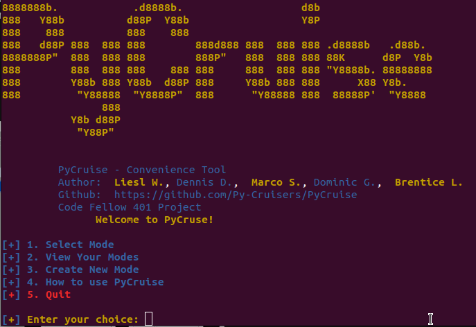
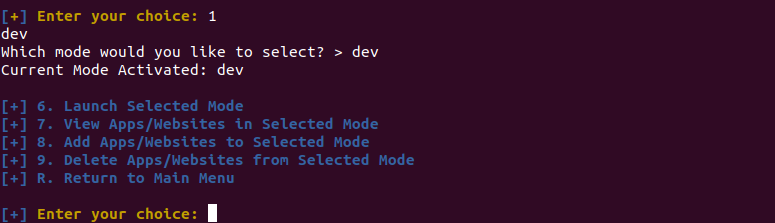
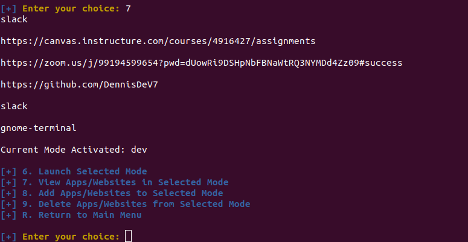
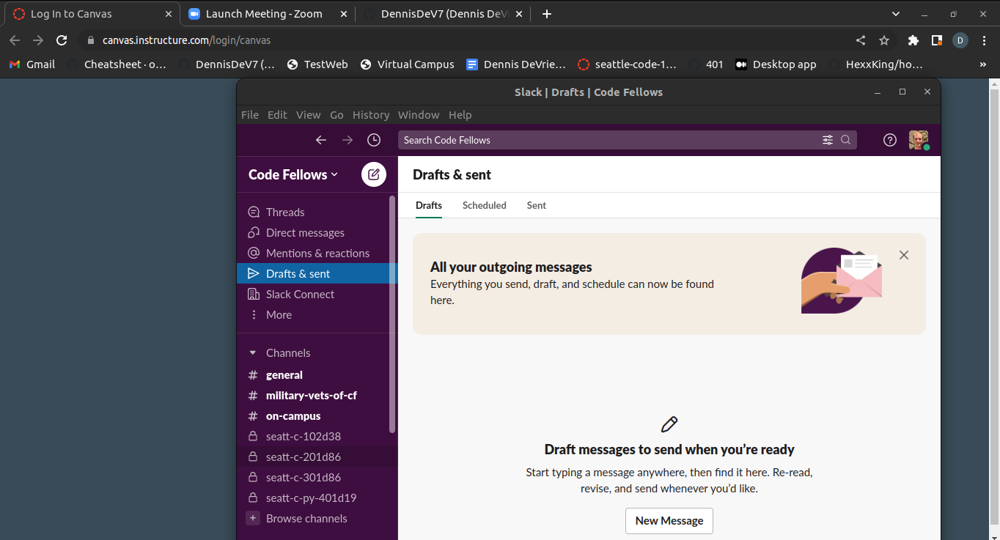

Pycruise is a convenience command line interface application written in Python
Select Mode
Pressing 1 and hitting enter will bring you to a new
page where you can enter an existing mode to see a new menu
View Apps/Websites
Pressing 7 and hitting enter will bring you to a new
menu where you can view the existing apps in the current mode
Launch!
Pressing 6 and hitting enter will launch all of the apps and websites in the mode!